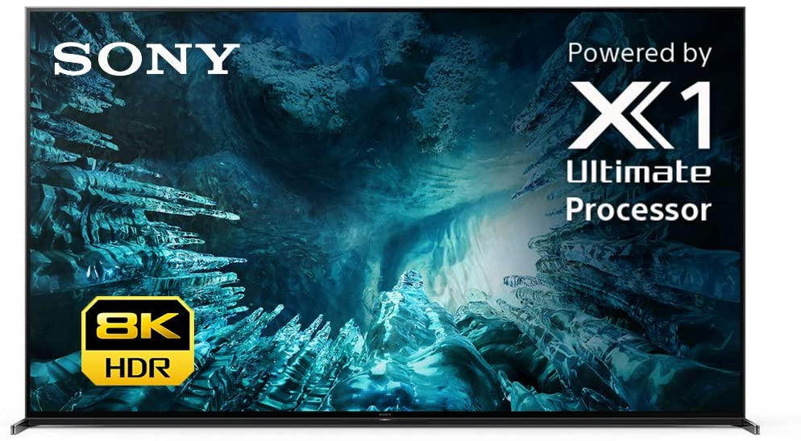
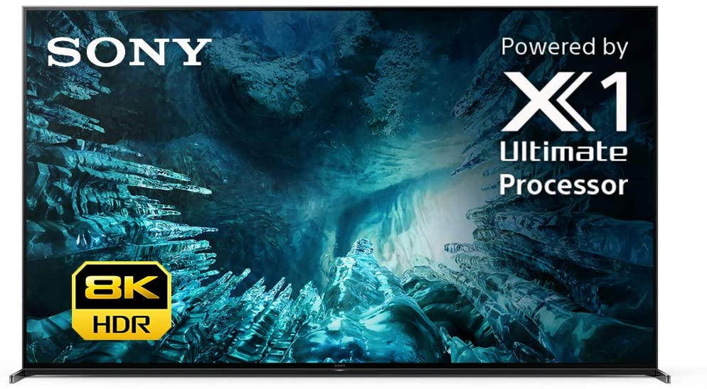

Believe in true contrast, precisely controlled
Generating brightness on an 8K panel can be difficult due to its low transmission rate. This 8K TV precisely balances light output across the screen to ensure scenes are full of breathtaking contrast. With zones of LEDs lit independently, Full Array LED provides more realistic contrast by making light areas lighter and dark areas darker. Contrast is further enhanced by 8K X-tended Dynamic Range™ PRO5, which adjusts brightness for higher peaks in glare and deeper blacks in shadow.
Hear sound from the right place in the scene
Sound on conventional TVs with a speaker located below the screen is often out of sync with the picture. Our Acoustic Multi-Audio™ includes a vibrating frame tweeter, a speaker that enables sound to follow the action for a truly immersive experience. Independent amps are controlled separately to precisely manage sound positioning of this speaker in high tone areas, enhancing sound pressure and stability for more realism.
Making colour and contrast more real
Object-based HDR remaster
With Object-based HDR remaster, the colour in individual objects on screen is analysed and the contrast adjusted, unlike most TVs where contrast is only adjusted along one black-to-white contrast curve. Since objects are remastered individually, this TV can reproduce greater depth, textures, and more realistic pictures.
Sound flows around you with Dolby Atmos®
Be surrounded by sound as if you are right there in the scene. With Dolby Atmos™, sound comes from above as well as from the sides so you can hear objects moving overhead with more realism for a truly multi-dimensional experience.
Sound and picture in harmony—the frame is the speaker
Hear sound from the right place in the scene with speakers integrated into the frame. Having the speakers closer to the centre of the screen brings sound and pictures into harmony.


Watch what you love, control it with your voice
Search for shows, get recommendations, even control your TV—faster—with your voice. Ask Google or Amazon Echo for hands-free help on your big screen.
